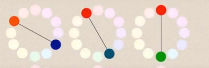
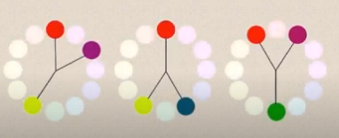
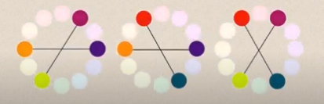
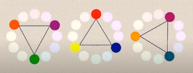
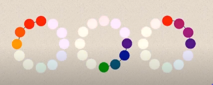

Las armonias nos ayudan a crear un grupo de colores, existen 5 maneras de agrupar colores segun su afinidad
| Armonia | Significado | Imagen |
|---|---|---|
| Complementarios | Dos colores opuestos en el circulo cromatico |  |
| Complementarios cercanos | Crean grupos de 3 colores armonicos basados en 1 color y los 2 adyacentes a su opuesto o complementario |  |
| Complementarios dobles | Son grupos de 2 pares de colores complementarios dispuestos en una X en el circulo cromatico |  |
| Triadas complementarias | Son 3 colores armonicos, unidos por un triangulo dentro del circulo cromatico |  | Gamas multiples | Se dan con los colores en el circulo cromatico que tambien son armonicos |  |
Nota: Recuerda tambien la psicologia de los colores, que nos habla que cada color tiene su significado, asi por ejemplo mientras el rojo es un color intenso que refleja pasion, guerra el azul genera calma y tranquilidad